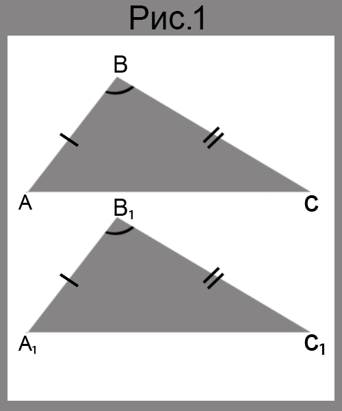
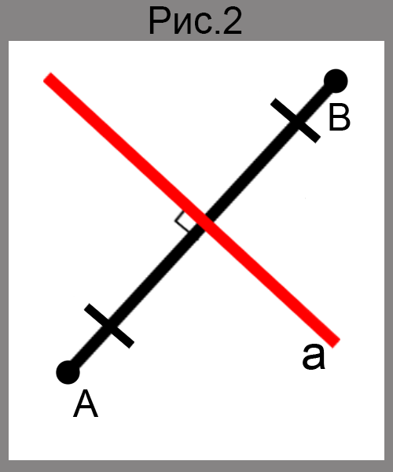
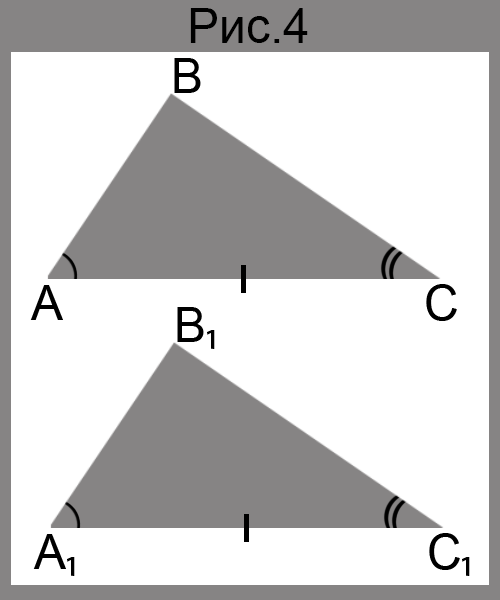

Первый и второй признак равенства треугольников
Если для треугольников ABC и A₁B₁C₁ выполняются шесть условий:
∠A=∠A₁, ∠B=∠B₁, ∠C=∠C₁, AB=A₁B₁, BC=B₁C₁, CA=C₁A₁, то очевидно, что эти треугольники совпадут при наложении. Значит они равны.
Попробуем уменьшить количество условий. Например, оставим лишь два равенства: AB=A₁B₁ и BC=B₁C₁. В этом случае треугольники ABC и A₁B₁C₁ могут оказаться неравными.
Как же сократить список требований до минимума, но при этом сохранить равенство треугольников? На этот вопрос отвечают теоремы, которые называют признаками равенства треугольников.
Первый признак равенства треугольников: по двум сторонам и углу между ними
Теорема
Если две стороны и угол между ними одного треугольника равны соответственно двум сторонам и углу между ними другого треугольника, то такие треугольники равны.

Доказательство
Рассмотрим треугольник ABC и A₁B₁C₁, у которых AB=A₁B₁, BC=B₁C₁, ∠B=∠B₁(рис.1). Докажем, что ▲ABC=▲A₁B₁C₁.
Наложим ▲ABC на ▲A₁B₁C₁ так, чтобы луч BA совместилися с лучом B₁A₁, а луч BC совместился с лучом B₁C₁. Это можно сделать, так как по условию ∠B=∠B₁. Поскольку по условию BA=B₁A₁ и BC=B₁C₁, то при таком наложении сторона BA совместится со стороной B₁A₁, а сторона BC - со стороной B₁C₁. Следовательно, треугольник ABC и A₁B₁C₁ полностью совместятся, значит, они равны.
Определение
Прямую, перпендикулярную отрезку и проходящую через его середину, называют серединным перпендикулярном отрезка.

Прямая a - серединный перпендикуляр отрезка AB, а точки A и B равноудалены от прямой a.(рис.2)
Теорема
Каждая точка серединного перпендикуляра отрезки равноудалена от концов этого отрезка
Доказательство
Пусть X - произвольная точка серединного перпендикуляра a отрезка AB, точка M - середина отрезка AB. Надо доказать, что XA=XB.
Если точка X совпадает с точкой M (a это возможно, так как X - произвольная точка a), то XA=XB.
Если точка X и M не совпадают, то рассмотрим треугольники AXM и BXM (рис.3). В этих треугольниках AM=MB, так как точка M- середина отрезка AB, сторона XM - общая, ∠AMX=∠BMX=90°. Следовательно, треугольник AXM и BMX равны по первому признаку равенства треугольников. Значит, отрезки XA и XB равны как соответственные стороны равных треугольников.Второй признак равенства треугольников: по стороне и двум прилежащим к ней углам
Теорема
Если сторона и два прилежащих к ней угла одного треугольника равны соответственно стороне и двум прилежащим к ней углам другого треугольника, то такие треугольники равны.

Доказательство
Рассмотрим треугольник ABC и A₁B₁C, у которых AC=A₁C₁, ∠A=∠A₁, ∠C=∠C₁ (рис.4). Докажем, что ▲ABC=▲A₁B₁C₁.
Наложим треугольник ABC на треугольник A₁B₁C₁ так, чтобы точка A совместилась с точкой A₁, отрезок AC - с отрезком A₁C₁ ( это возможно, т.к. AC = A₁C₁) и точки B и B₁ лежали в одной плоскости относительно прямой A₁C₁. Поскольку ∠A=∠A₁ и ∠C=∠C₁, то луч AB совместим с лучом A₁B₁, а луч CB - с лучом C₁B₁. Тогда точка B - общая точка лучей AB и CB - совместится с точкой B₁ - общей точкой лучей A₁B₁ и C₁B₁. Значит, треугольник ABC и A₁B₁C₁ полностью совместятся, следовательно, они равны.